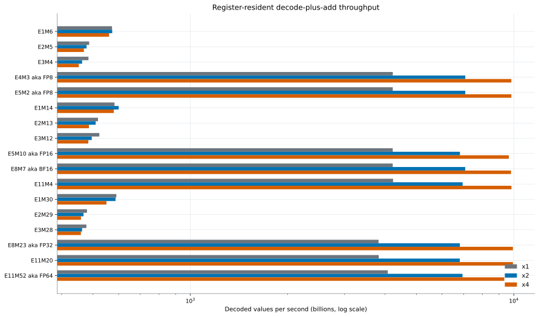
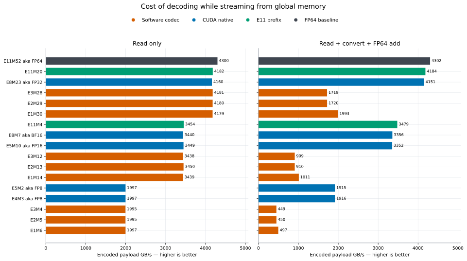
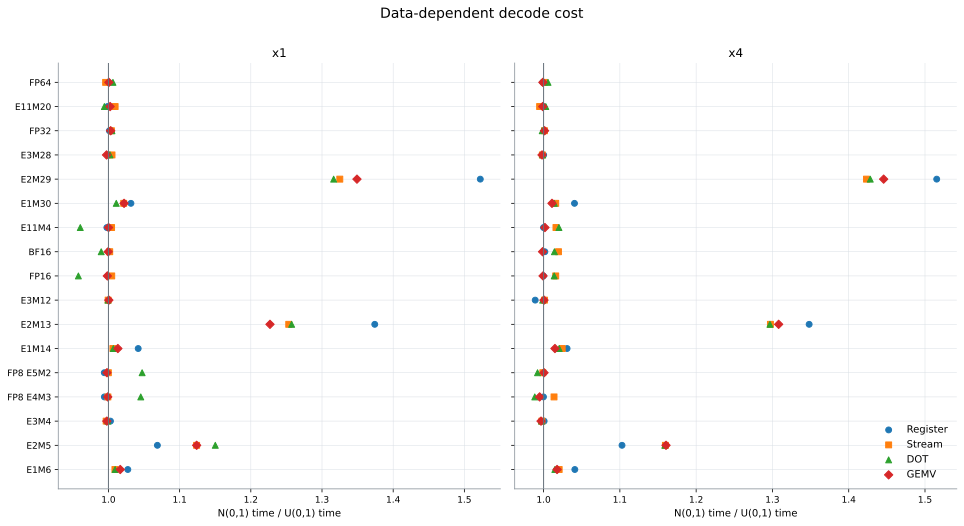

Conversion performance
Microbenchmarks isolate decode pressure in registers and while streaming, without treating them as additive kernel phases.
Register-resident conversion
This measures decoded values per second after the packet is already in registers; it includes an FP64 add that keeps results live.

Read-only versus read-and-decode
The paired panels show the payload rate each complete instruction stream sustains; their times must not be subtracted.

Distribution sensitivity
Normal-to-uniform time ratios expose branchy decoders whose cost depends on exponent patterns.
